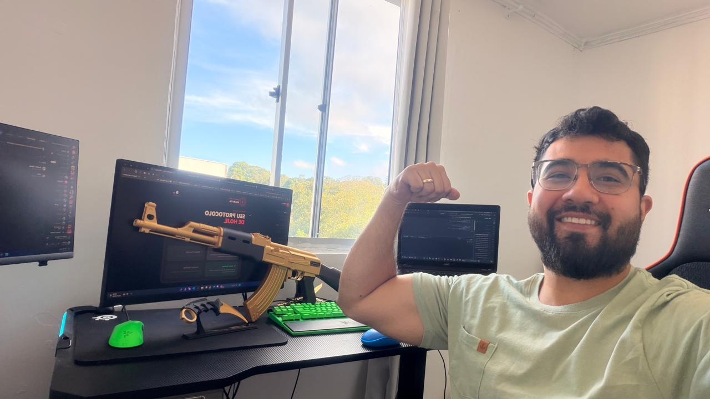
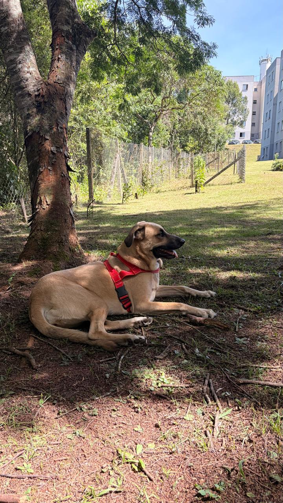
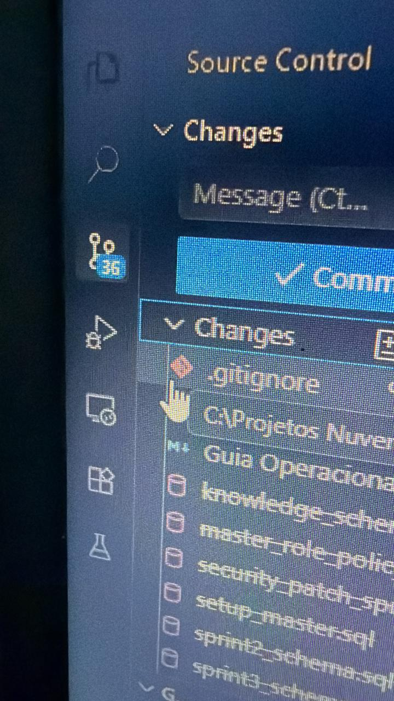
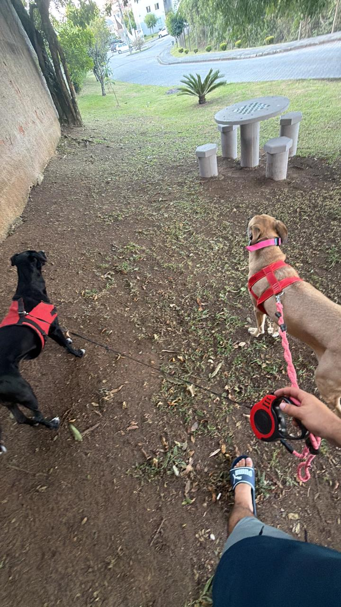
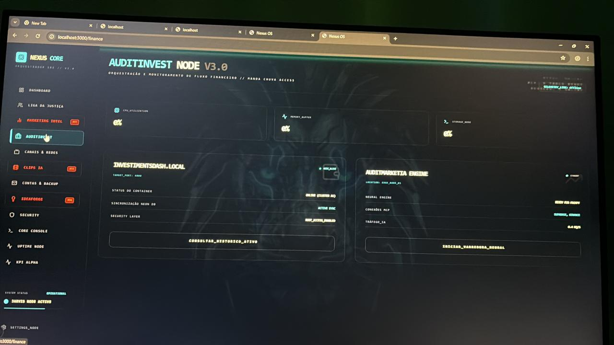

Christian Felipe
Skills & Exp | Senior Architect
// Technical Arsenal
AI Orchestration & LLMs
Critical Infrastructure
Data & Security
// High Authority Professional Timeline
Locaweb Company
Mai 2020 - Dez 2025 | Analista de Infraestrutura SRE
Liderança técnica em infraestrutura Cloud e On-premise. Orquestração de serviços críticos com foco em alta disponibilidade e performance escalável.
Hospital Evangélico Mackenzie
Mar 2019 - Nov 2021 | Técnico em Informática
Gestão de infraestrutura crítica hospitalar. Sustentação de sistemas vitais e conectividade em cenários de alta pressão.
Quality IT
Dez 2018 - Mar 2020 | Analista de T.I
Especialista em infraestrutura corporativa e arquitetura de suporte N2/N3.
SYKES Brasil
Jan 2018 - Dez 2019 | Técnico de suporte (Dell)
Isolamento de falhas críticas e troubleshooting avançado para ecossistemas de hardware/software Dell.
Trajetória & Visão
Iniciei no ecossistema de TI aos 16 anos. São **14 anos de evolução contínua**, passando por todas as camadas de infraestrutura e desenvolvimento crítico. Recentemente, consolidei um marco de 1,4 milhão de linhas de código verificadas em projetos core, demonstrando um compromisso absoluto com a qualidade e a volumetria técnica.
VIVENCIA Framework Integration | IA Immersion
Minha abordagem utiliza o framework **VIVENCIA**: Onde cada linha de código é uma peça estratégica de uma arquitetura resiliente.
Orchestrating
Cognitive Intelligence.
Especialista em construir a camada de inteligência para ecossistemas SaaS de alta performance. 14 anos de base tech + imersão total em IA.





Arsenal Técnico
Advanced Competencies & Technical Stack
Intelligence
- LLM Cascading (Gemini/GPT/Groq)
- Autonomous Agents Architecture
- RAG & Vector Search
- Prompt Engineering Expert
Backend Core
- Golang (High Concurrency)
- Python (AI/ML Ecosystem)
- Node.js / Bun / Fast API
- Microservices Orchestration
Infrastructure
- Cloudflare Workers & Pages
- Supabase & PostgreSQL
- Docker & Containerization
- GitHub Actions CI/CD
Methodology
- VIVENCIA Framework
- Sectoral Synergy Integration
- FP&A Tech Strategy
- Autonomous Documentation
Arquitetura Nexus
Intelligence Orchestration Logic
AI Cascading
Gemini 1.5 Flash
Interação em tempo real e baixa latência.
GPT-4o Mini
Validação de contexto e gestão de tokens.
Groq Llama3
Deep reasoning e orquestração de agentes.
Focus Arsenal
Architect's Deep Work Frequency
> Core Repositories & Deep KPI Dashboard
Noxus Operational Manual
Core Commands & System Orchestration
Objetivo Estratégico
"Estou disposto a trabalhar e desenvolver para empresas do ramo privado que tenham necessidade de integração e criação de LLMs e Agentes. Quero atuar em cargos diretamente envolvidos com IA, seguindo ordens e protocolos para entregar resultados sem limites."
Connect with the Future
"Estou pronto para levar a sua empresa ao próximo nível de automação e sinergia tecnológica."